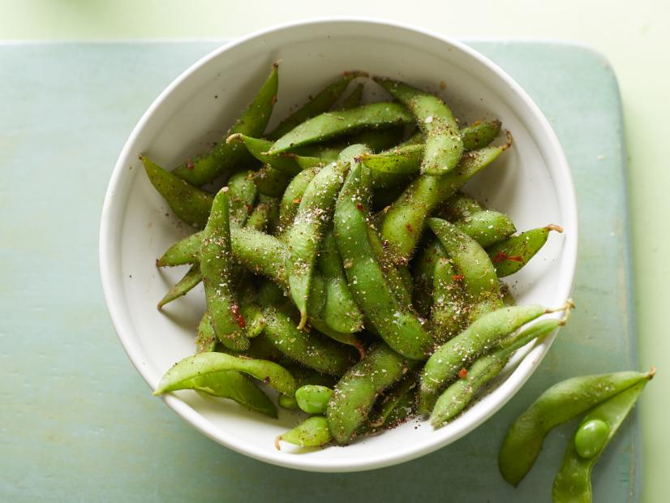

Teriyaki

This is a recipe for spiced edamame.
Ingredients:
- 2 teaspoons kosher salt
- 1 teaspoon chili powder
- 1/4 teaspoon red pepper flakes
- 1/2 teaspoon dried oregano
- 1 pound of frozen edamame
- Splash sesame oil
- 1 3/4 pounds chicken thigh fillets
- 1 teaspoon peanut oil
- 1 3/4 to 2 1/2 cups sushi rice
Steps:
- Heat the salt, chili powder, and pepper flakes in a small dry skillet over medium heat,
stirring until hot and aromatic, about 3 minutes. Remove from the heat and crumble in the oregano.
- Boil the edamame pods in salted water until tender, about 8 minutes. Drain in a colander and pat dry.
Toss the edamame pods with the chili-salt and serve warm.